BUG-001: POS Silent Failure on Quantity Exceeding Stock Medium
Location: Sales Out
Steps: Sales Out → Select product → Enter quantity exceeding stock (e.g., 999 when only 32 available) → Click Add
Expected: Clear error message "Quantity exceeds available stock (32)"
Actual: Add button does nothing, no error message shown. Cart remains empty with no feedback.
Impact: Confusing UX - cashier has no idea why product wasn't added to cart
Preview: Cashier Sales Out screen showing quantity greater than stock with no error message.
Sales Out quantity greater than stock with no feedback
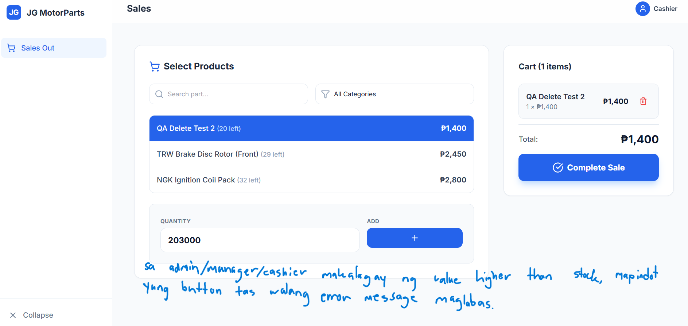BUG-002: Add Product Form UX Issue for Negative Prices Low
Location: Inventory → Add Product Form
Steps: Open Add Product → Enter negative values for Cost, Retail Price, Wholesale Price → Click Save
Expected: Validation error preventing negative prices
Actual: Form accepts negative values but Save button appears non-functional (form gets stuck). Product is NOT saved.
Impact: While data integrity is maintained, the UX is poor - form should validate and show clear error messages
Preview: Inventory example highlighting problematic values and the need for validation.
Inventory row highlighting invalid/edge-case values
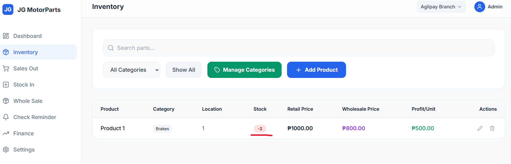BUG-003: Admin Page Refresh Redirects to Dashboard Medium
Location: Inventory, Sales Out, Stock In, Wholesale, Check Reminder, Finance, Settings (admin area)
Steps: Log in as Admin → Navigate to any of the above pages → Refresh the page (F5 or browser refresh)
Expected: Page reloads and stays on the current section (e.g. Inventory, Stock In)
Actual: Page reloads but redirects to Dashboard instead of the current page.
Impact: Admin loses context on refresh; must re-navigate to the section they were on
Preview: Finance screen example where a refresh sends the user back to Dashboard instead of staying on Finance.
Admin on Finance page affected by refresh redirect behavior
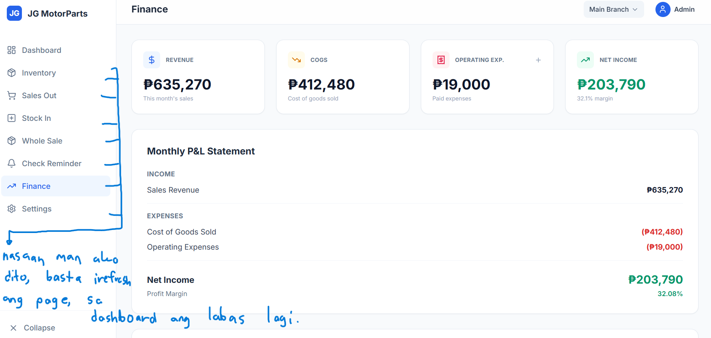BUG-004: "Show more" Toggle Easy to Miss on Inventory Low
Location: Inventory → product list (with "All Categories" selected)
Steps: Open Inventory with category "All Categories" → Observe product list. Add a product in a category (e.g. Oils and Fluids); return to Inventory with "All Categories".
Expected: Either all products visible by default, or a clear indicator (e.g. "Show more" or "Showing X of Y") so users don't assume the filter is broken.
Actual: When "Show more" is off, only a limited set of products is shown. Users can mistake this for "All Categories" not including certain categories. Turning "Show more" on shows the full list (intended behavior).
Impact: Confusing UX—consider defaulting to show all products or making the toggle more visible/labeled so "All Categories" is not perceived as broken.
Preview:
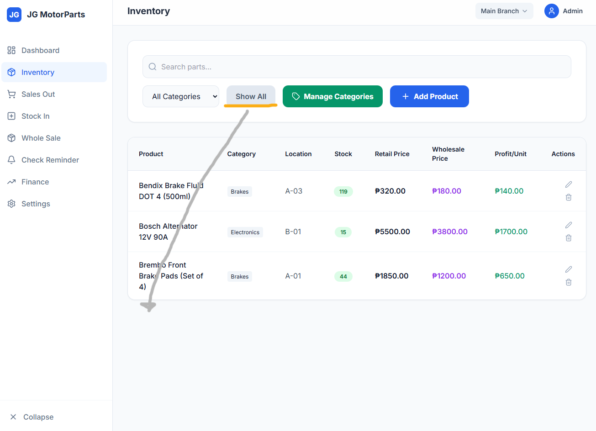BUG-005: Sales Out Shows Only 3 Products by Default High
Location: Cashier & Manager (Main Branch) → Sales Out → Select Products panel
Steps: Log in as Cashier or Manager for Main Branch → Go to Sales Out → With category set to "All Categories" and no search term, observe the product list.
Expected: Either all available products are listed, or there is a clear paging/"Show more" control indicating that only a subset is visible.
Actual: Only 3 products are visible in the Select Products list even when more products exist; there is no obvious way to see the rest without knowing or guessing product names.
Impact: Cashier and Manager may assume only these 3 products are available and might miss other items unless they know to search by name. Consider adding pagination or a visible "Show more" indicator.
Preview: Sales Out product list for Cashier and Manager, each showing only three visible items under "All Categories".
Cashier – Sales Out
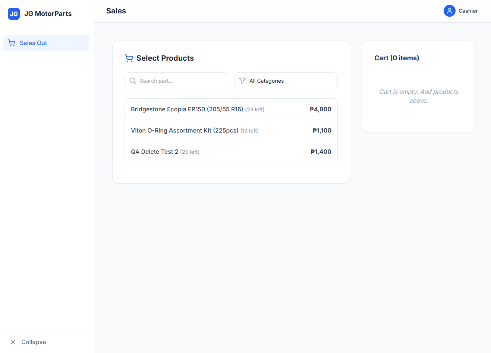Manager – Sales Out
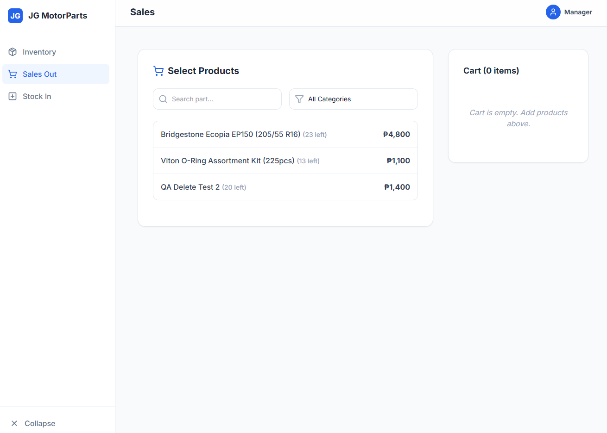BUG-006: Wholesale - All Categories Shows Only 3 Products High
Location: Wholesale (Admin) → Select Products
Steps: Log in as Admin → Go to Whole Sale → Ensure category filter is set to \"All Categories\" with no search term → Compare the visible product list to the actual number of products in Inventory.
Expected: With \"All Categories\" selected, Wholesale should list all eligible products (or clearly indicate paging / \"Show more\" so users know more items are available).
Actual: Similar to BUG-005, the Wholesale Select Products panel only shows 3 products even though there are many more items in Inventory; no obvious control indicates that the list is truncated.
Impact: Admins using Wholesale for bulk orders may assume there are only a few products available at wholesale pricing, missing other items and potentially losing sales opportunities.
Preview: Wholesale Select Products view with \"All Categories\" selected, showing only three products despite a larger inventory.
Wholesale All Categories list limited to three products
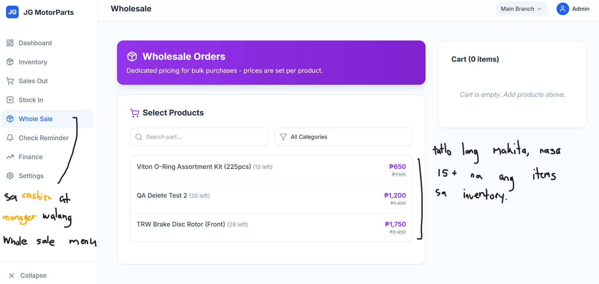BUG-007: Offline Add Product Shows Success Despite Network Error Medium
Location: Inventory → Add Product
Steps: Set browser to Offline (DevTools → Network → Offline) → Open Add Product → Fill in product details → Click Save Product
Expected: After the "Network error: Could not reach server" dialog, the app should not show a success message. User should see that the product was not saved (e.g. stay on form with error state, or a single clear "Save failed" message).
Actual: A "Network error" dialog appears first (correct). After clicking OK, the app then shows "Product Added Successfully!" even though the request never reached the server—product is not in the list when back online.
Impact: Misleading feedback: user believes the product was saved when it was not. Can cause inventory discrepancies and confusion. Fix: do not show success when the save request failed; only show success after confirmed server response.
Preview: (1) Network error dialog when saving offline; (2) After clicking OK, incorrect "Product Added Successfully!" message while still offline.
1. Network error when saving offline
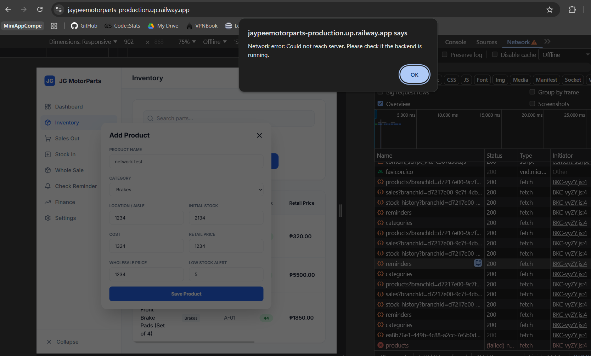2. Incorrect success message after OK (still offline)
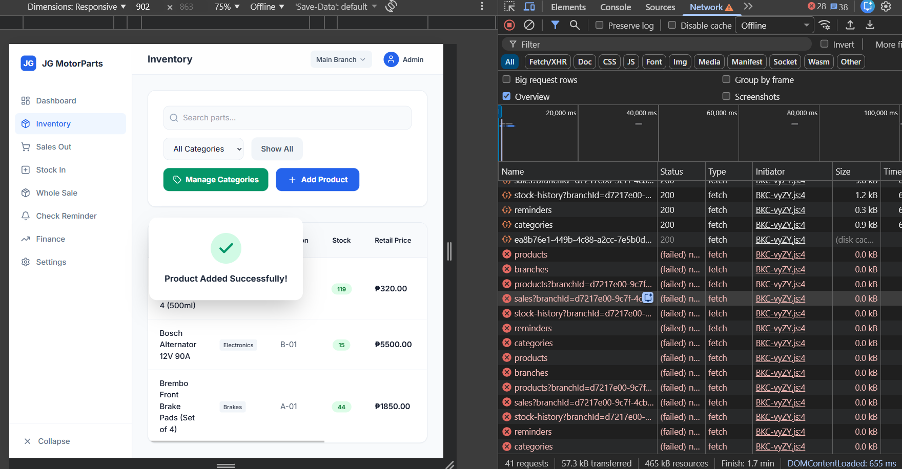BUG-008: Operating Expense – No Due Date Field When Adding Low
Location: Finance (or Expenses) → Add Operating Expense
Steps: Open Add Operating Expense → Fill in expense details → Save. View the added expense; it shows a due date.
Expected: When adding an expense, the form should allow the user to specify a due date (e.g. date picker or due-date field). The listed due date should reflect the user’s choice.
Actual: The add-expense form does not include a due date field. The due date displayed for the expense defaults to the day the expense was added, with no way to set a different due date at creation time.
Impact: Users cannot record future-due or backdated due dates when adding an expense; workaround is to add then edit (if supported) or accept incorrect due dates.
Preview: Add expense form (no due date field) and resulting expense with default due date.
Add expense form – no due date field
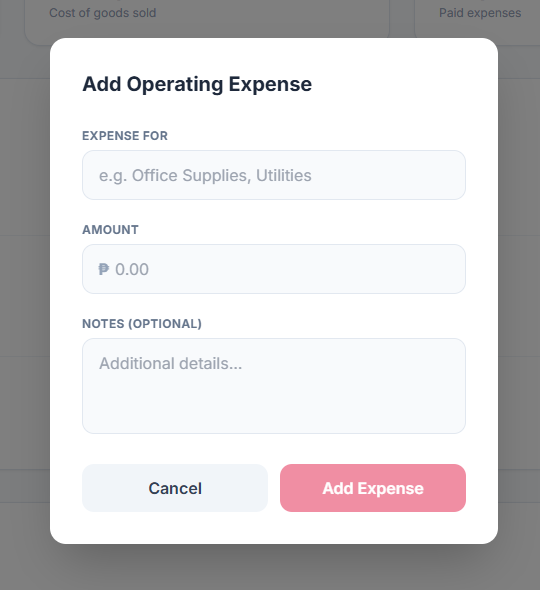Expense listed with default due date
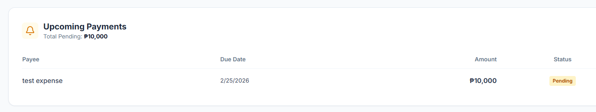BUG-009: Cart Allows Quantity Beyond Stock via Repeated Adds High
Location: Sales Out (Admin, Manager, Cashier) → Cart
Steps: Find a product with stock = 13 → Add 13 units to cart → Add the same product with 13 units again (and repeat) → Click Complete Sale.
Expected: Total quantity of an item in the cart should never exceed its available stock. After 13 units are in the cart, further attempts to add that item should be blocked with a clear error.
Actual: Each 13‑unit add is accepted and the cart total (and final sale amount) continues to increase, even though this exceeds the actual stock of 13 pieces.
Impact: System allows overselling beyond inventory, leading to inaccurate stock levels and misleading sales totals across Admin, Manager, and Cashier flows.
Preview: Cart showing repeated 13‑unit adds for the same product, exceeding actual stock.
Cart with repeated 13‑unit adds (stock overflow)
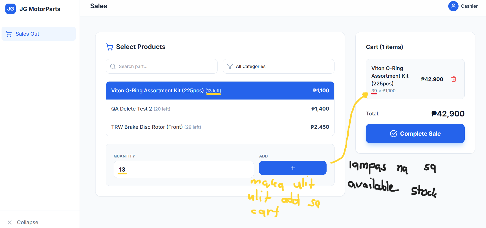BUG-010: Paid Check Reminders Do Not Affect Expense Tally Medium
Location: Finance → Check Reminder / Tally of Expenses
Steps: Add a Check Reminder for an outgoing payment → Later, mark the check as Paid → Open the expenses/tally view to compare totals.
Expected: When a Check Reminder is marked Paid, its amount should be reflected in the system’s expense tracking (e.g. deducted from available cash / included in expense totals), similar to an operating expense, or at least clearly linked.
Actual: Marking a check reminder as Paid only updates its status; the amount is not automatically deducted or reflected in the expense tally. Operating expenses and check-based payments are not kept in sync.
Impact: Financial view can become misleading—paid checks are not counted alongside operating expenses, so owners may underestimate total expenses or have to manually reconcile checks versus expenses.
Preview: Check reminders marked Paid and the separate expense tally that does not include those amounts.
Paid check reminders list
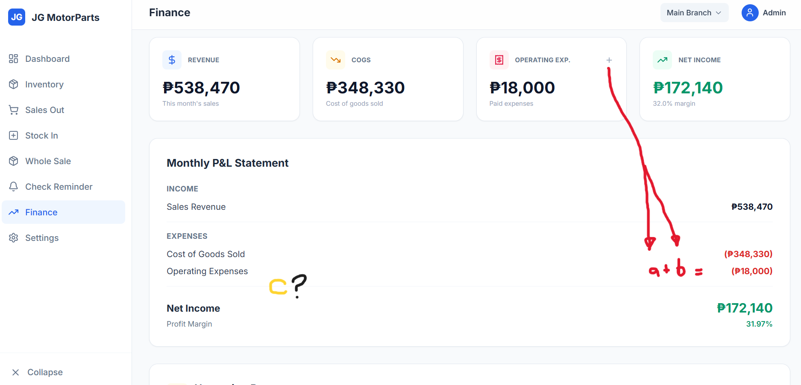Expense tally not including paid checks
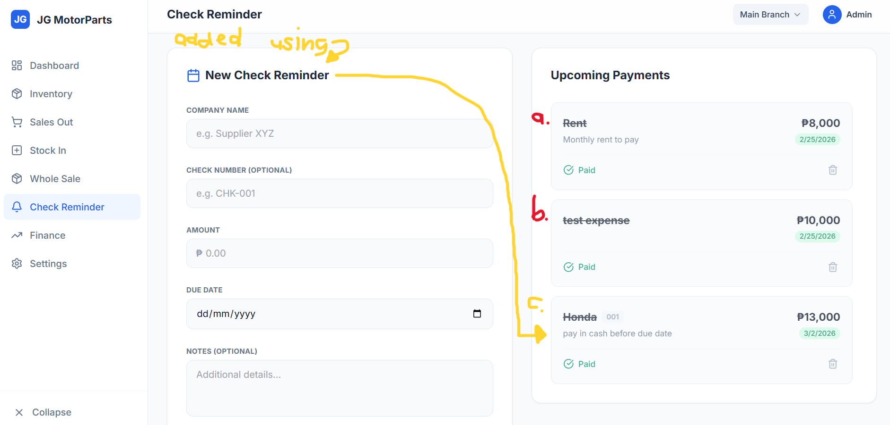BUG-011: Branch Operating Expenses Leak Between Branches High
Location: Finance → Operating Expenses / P&L per Branch
Steps: Switch to Main Branch → Add an operating expense (e.g. ₱18,000) and mark it Paid → Switch branch selector to another branch (e.g. Aglipay Branch) → Open the Finance view.
Expected: Each branch’s Finance view should reflect only that branch’s own operating expenses and net income. Expenses added in Main Branch should not appear in Aglipay Branch (unless explicitly shared/global).
Actual: Operating expenses recorded in Main Branch are also shown in the other branch’s Finance view (e.g. Aglipay Branch shows ₱18,000 operating expenses and corresponding negative net income, even with no sales or expenses in that branch).
Impact: Per-branch P&L is incorrect—expenses “leak” into other branches, making it impossible for the owner to trust branch-level profitability or compare branches accurately.
Preview: Finance view for Aglipay Branch showing operating expenses and net income impacted by an expense created in Main Branch.
Branch Finance showing leaked operating expense from Main Branch
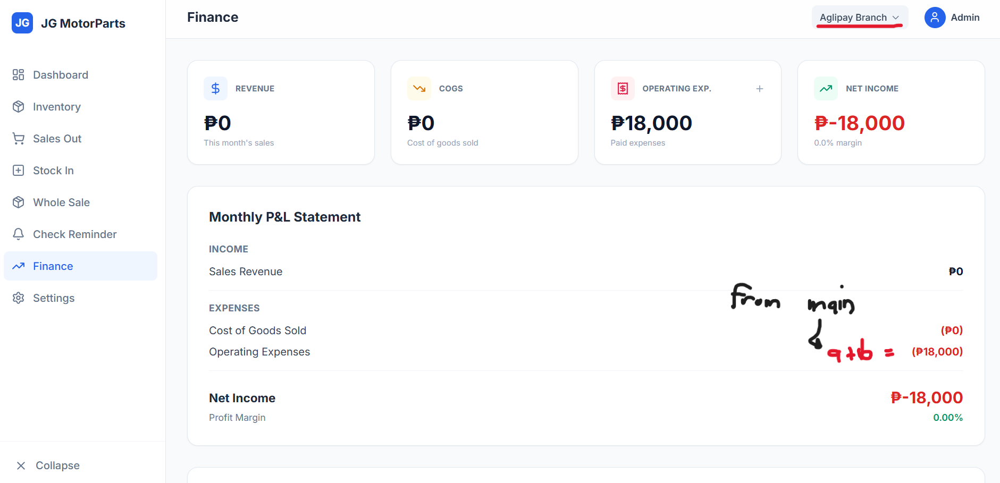BUG-012: Manager Cannot Delete Product from Inventory Medium
Location: Inventory (Manager role) → Product list → Delete action
Steps: Log in as Manager → Go to Inventory → For an existing product, click the trash/delete icon → In the browser confirmation dialog “Delete this product?”, click OK.
Expected: After confirming deletion, the product should be removed from the Inventory list (and no longer available in Sales Out / Stock In for that branch).
Actual: The confirmation dialog appears and OK is accepted, but the product remains in the list; there is no error message and no visible change.
Impact: Managers cannot clean up or correct inventory from their role, forcing all delete operations to go through Admin and increasing risk of stale or incorrect products staying in the system.
Preview: Manager attempting to delete a product, with confirmation dialog shown but product not removed.
Manager delete confirmation with product still present
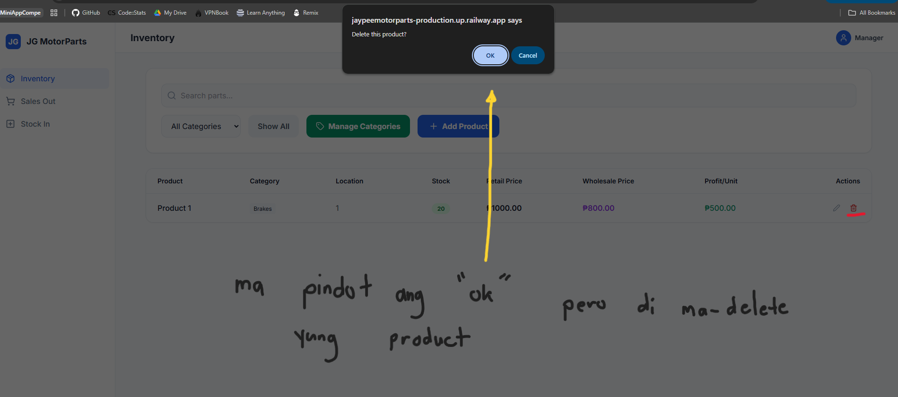BUG-013: Negative Stock and Negative Inventory Value from Overselling High
Location: Inventory & Dashboard (Admin, branch views)
Steps: Using Sales Out, oversell a product so that its stock goes below zero (e.g. by repeatedly adding more than available stock as described in BUG-009) → Open Inventory and Dashboard for that branch.
Expected: System should prevent inventory from going below zero, or at minimum should not treat negative stock as valid when calculating Inventory Value and Low Stock information.
Actual: Product stock can become negative (e.g. Stock: -2), and the Dashboard’s Inventory Value panel shows a negative peso value (e.g. -₱1,000) for that branch, even though inventory value in reality cannot be negative.
Impact: Inventory and financial dashboards become misleading; negative stock and negative inventory asset value make it hard for the owner to understand real stock and asset position. This issue is directly related to BUG-009 (cart overselling) since overselling drives stock below zero.
Preview: Inventory and Dashboard views showing negative stock and negative inventory value for a product after overselling.
Inventory – product with negative stock count
Dashboard – negative inventory value from negative stock

BUG-014: Branch Inventory Cache Shows Previous Account’s Data After Account Switch Medium
Location: Inventory (branch-specific) after logging out Admin and logging in as Manager of another branch in the same browser.
Steps: 1) Log in as Admin on Main Branch and view Inventory (with products). 2) Log out (same browser tab). 3) Log in as Manager of a second branch whose inventory is actually empty. 4) Immediately open Inventory for the second branch (before manual refresh).
Expected: After logging in as a different user/branch, Inventory should reload using the new account’s branch context so the Manager of the second branch only sees that branch’s own products (empty in this scenario).
Actual: On initial load after account switch, the Manager of the second branch temporarily sees the Main Branch products as if they belong to the second branch. Only after manually refreshing the page does the inventory correctly show as empty.
Impact: Staff can be misled about which items exist in their branch (especially when checking availability for customers), and this reveals a broader issue with caching/session state not being cleared properly between logins.
Preview: Sequence showing account switch from Admin (Main Branch) to Manager of another branch and the stale inventory view before refresh.
1. Admin logged in with Main Branch inventory
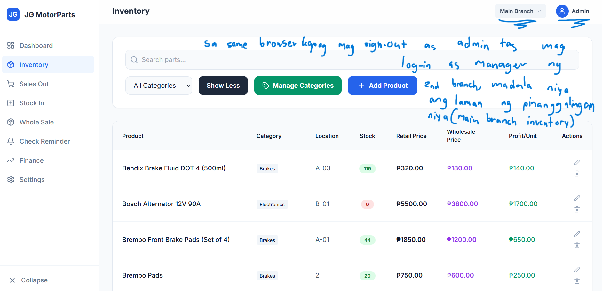2. Logout from Admin in same browser
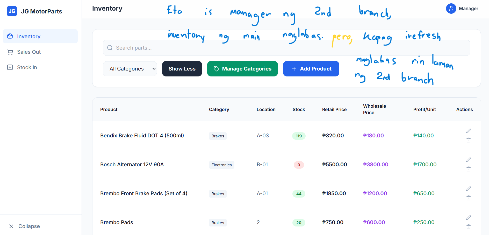3. Login as Manager for second branch
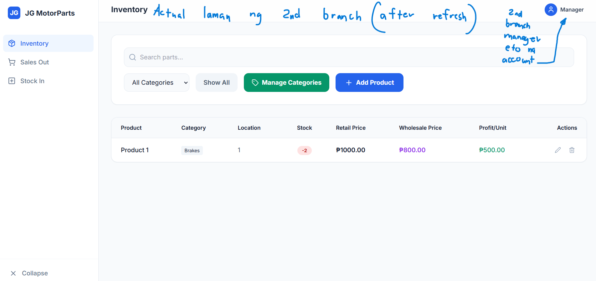4. After login, Manager sees Main Branch products in second branch Inventory
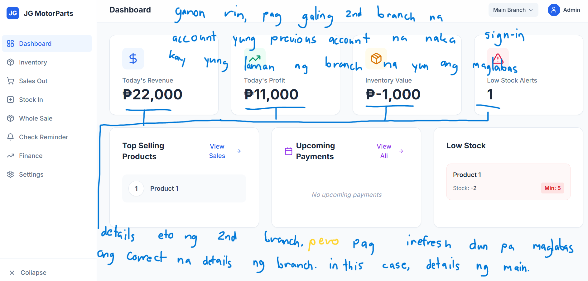5. After manual refresh, inventory correctly shows empty for second branch
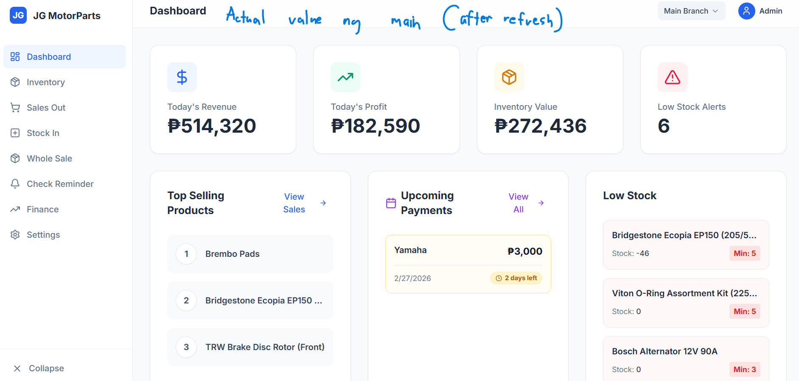BUG-012: Manager Cannot Delete Product from Inventory High
Location: Inventory (Manager role) → Product list → Delete action
Steps: Log in as Manager → Go to Inventory → For an existing product, click the trash/delete icon → In the browser confirmation dialog “Delete this product?”, click OK.
Expected: After confirming deletion, the product should be removed from the Inventory list (and no longer available in Sales Out / Stock In for that branch).
Actual: The confirmation dialog appears and OK is accepted, but the product remains in the list; there is no error message and no visible change.
Impact: Managers cannot clean up or correct inventory from their role, forcing all delete operations to go through Admin and increasing risk of stale or incorrect products staying in the system.
Preview: Manager attempting to delete a product, with confirmation dialog shown but product not removed.
Manager delete confirmation with product still present
BUG-011: Branch Operating Expenses Leak Between Branches High
Location: Finance → Operating Expenses / P&L per Branch
Steps: Switch to Main Branch → Add an operating expense (e.g. ₱18,000) and mark it Paid → Switch branch selector to another branch (e.g. Aglipay Branch) → Open the Finance view.
Expected: Each branch’s Finance view should reflect only that branch’s own operating expenses and net income. Expenses added in Main Branch should not appear in Aglipay Branch (unless explicitly shared/global).
Actual: Operating expenses recorded in Main Branch are also shown in the other branch’s Finance view (e.g. Aglipay Branch shows ₱18,000 operating expenses and corresponding negative net income, even with no sales or expenses in that branch).
Impact: Per-branch P&L is incorrect—expenses “leak” into other branches, making it impossible for the owner to trust branch-level profitability or compare branches accurately.
Preview: Finance view for Aglipay Branch showing operating expenses and net income impacted by an expense created in Main Branch.
Branch Finance showing leaked operating expense from Main Branch